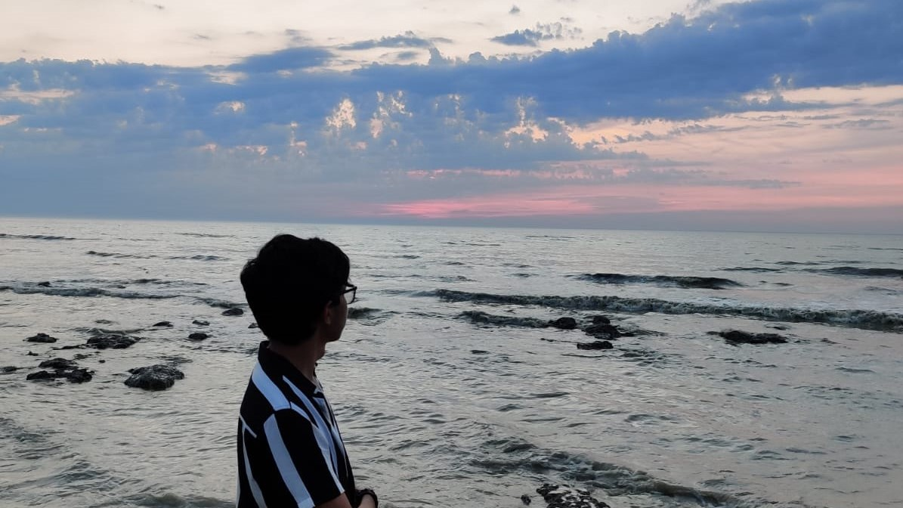

Bonjour ! Je m'appelle Mehdi AL SID CHEIKH
Bienvenue sur mon portfolio !

Mon parcours
Diplômé d’un Bac STI2D et d'un DUT Informatique, je suis en cours de deuxième année à l'IIM pour mon Bachelor de Développement web et souhaite préparer mon Mastère afin de devenir développeur Front-End.
Après avoir obtenu mon bac STI2D (spécialité SIN) avec mention très bien, j’ai intégré l’IUT Paris Descartes afin d’obtenir mon DUT Informatique. Ces 2 années de formation m’ont permis de me passionner pour le développement web et je veux à présent me dédié dans ce domaine.
Dynamique, organisé et doté d’un bon esprit créatif, je possède les qualités d’adaptation indispensables à la réussite de n’importe quel projet. J’ai, de plus, un bon niveau en anglais et un très bon esprit d’équipe grâce aux nombreux projets universitaires dans lesquels j’ai pu travailler.